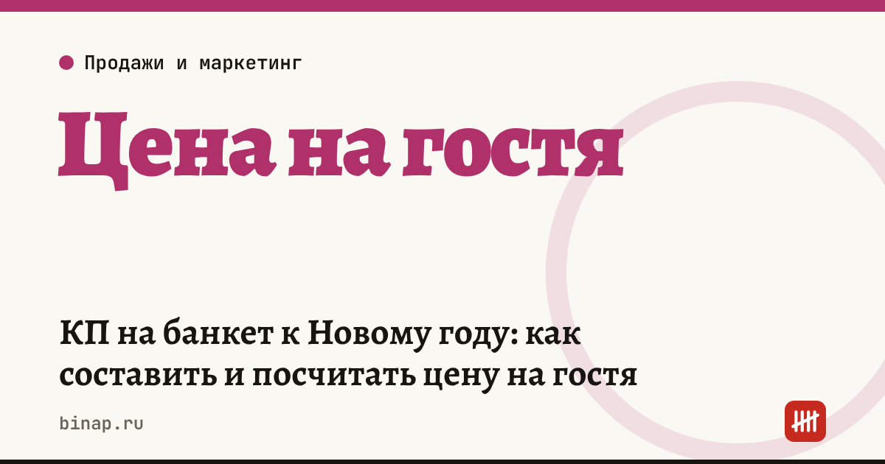

КП на банкет к Новому году: как составить и посчитать цену на гостя

Корпоративы на Новый год бронируют за несколько недель, и выигрывает кафе, которое первым присылает понятное предложение: сколько стоит на гостя, что входит, какие условия брони. КП на банкет помещается на одну страницу, а цену на гостя считают от себестоимости меню, а не «как у соседей».
Коротко
- Заголовок КП — сразу с ценой: «Банкет на 30 гостей 26 декабря — от 4 000 ₽ на человека».
- Два варианта меню по разной цене: клиент выбирает между ними, а не между вами и конкурентом.
- Цену на гостя считают от себестоимости блюд и целевого фудкоста.
- Условия брони: предоплата, срок подтверждения числа гостей, сервисный сбор.
- О сервисном сборе и любых доплатах нужно сообщить заранее — пропишите их в КП.
Сроки, изменения и разборы для ИП и самозанятых — каждое утро в Telegram и MAX. Подпишитесь, чтобы не пропустить.
Как посчитать цену на гостя
Фудкост — доля себестоимости продуктов в цене блюда: фудкост = себестоимость / цена × 100%. Отсюда цена = себестоимость / целевой фудкост.
Пример (расчёт редакции, цифры условные). Себестоимость продуктов банкетного меню на одного гостя — 1 200 ₽, целевой фудкост — 30%.
| Вариант 1 | Вариант 2 | |
|---|---|---|
| Себестоимость продуктов на гостя | 1 200 ₽ | 1 650 ₽ |
| Целевой фудкост | 30% | 30% |
| Цена на гостя | 1 200 / 0,3 = 4 000 ₽ | 1 650 / 0,3 = 5 500 ₽ |
| 30 гостей | 120 000 ₽ | 165 000 ₽ |
Фудкост показывает только продукты. Из оставшихся 70% платят зарплату, аренду, налоги — и только потом остаётся прибыль. Проверить фудкост и наценку по каждому блюду можно в калькуляторе фудкоста, подробнее о методике — в статье себестоимость блюда и наценка.
Структура КП на банкет
- Заголовок с датой, числом гостей и ценой «от».
- Меню: два варианта с ценой на гостя, напитки — отдельной строкой (свои, по меню или пакетом).
- Что входит: зал или выезд, обслуживание, сервировка, музыка, оформление, время.
- Условия: предоплата для брони даты, за сколько дней подтвердить число гостей, есть ли сервисный сбор.
- Срок действия и следующий шаг: «Цена действует до 1 декабря. Ответьте — забронируем дату».
Готовый шаблон КП на банкет и предложение обедов для офисов — скачать бесплатно. Как сделать КП, которое дочитывают, — в статье коммерческое предложение: структура и пример.
Что учесть по закону
- Правила оказания услуг общепита (постановление Правительства № 1515) запрещают без согласия гостя оказывать дополнительные услуги за плату. Поэтому сервисный сбор и доплаты указывайте в КП и договоре до заказа.
- Если продаёте алкоголь и маркированные товары, проверьте требования к учёту — подробно в статье маркировка в общепите.
- Предоплату корпоративного клиента проводите через кассу или по счёту — как выбрать кассу и учёт, читайте в статье касса и учёт для кафе.
Все материалы — в разделе «Кафе и общепиту».
Частые вопросы
Какой фудкост закладывать на банкет? Его выбирает само кафе по своей экономике. Банкет проще планировать, чем обычный зал: меню и число гостей известны заранее, списаний меньше.
Сколько брать предоплату? Столько, чтобы покрыть закупку продуктов и риск пустого зала в высокий сезон. Условие пропишите в КП и договоре.
Можно ли включить сервисный сбор? Можно, если гость знает о нём заранее и согласен. Укажите его в КП отдельной строкой.